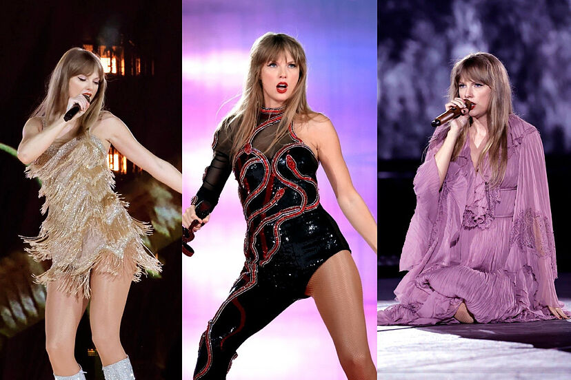

"El documental más taquillero de 2023"
Sobre Taylor
Experiencias de los fans
Tradiciones en los conciertos
Otros tours
About
La experiencia de los fans
nshfihsfiosgfihrfihtgirfhvndfjzg

Tradiciones en sus conciertos